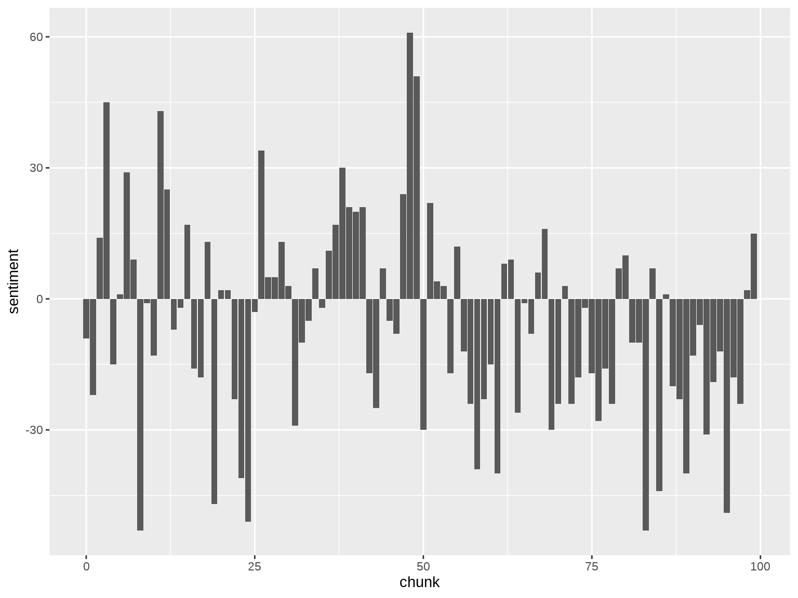

Using sentiment analysis, I chart the emotional highs and lows of three classic novels
waterfall
Published
November 19, 2022
Novels can take you for such a ride.
Today I’m experimenting with sentiment analysis on some novels I’ve recently read. I’ll be using tidytext with data from gutenbergr (i.e. Project Gutenberg), which means I’m restricted to the classics. I read three this year: Swann’s Way by Marcel Proust, Tess of the d’Urbervilles by Thomas Hardy, and The Age of Innocence by Edith Wharton.
Quick review of each. (1) It takes a certain mood to be reading Proust. I got through Within a Budding Grove but found halfway through that oops I’m not in the mood anymore, so I stopped searching for that lost time. (2) While I enjoyed Hardy’s Far from the Madding Crowd, Tess was such an unrelenting depression parade that I was feeling numb by the end of it. (3) Ah, Age of Innocence is one of my all-time favorites. I have been, at various points in my life, Newland, Ellen, and May. My God, I might have even been a Julius Beaufort.
Let’s load up these works.
library(tidyverse)library(tidytext)library(gutenbergr)# Get the IDsgutenberg_works(title %in%c("Swann's Way","Tess of the d'Urbervilles: A Pure Woman","The Age of Innocence"))
# A tibble: 3 × 8
gutenberg_id title author guten…¹ langu…² guten…³ rights has_t…⁴
<int> <chr> <chr> <int> <chr> <chr> <chr> <lgl>
1 110 Tess of the d'Urbe… Hardy… 23 en Banned… Publi… TRUE
2 541 The Age of Innocen… Whart… 104 en Movie … Publi… TRUE
3 7178 Swann's Way Prous… 987 en <NA> Publi… TRUE
# … with abbreviated variable names ¹gutenberg_author_id, ²language,
# ³gutenberg_bookshelf, ⁴has_text
books <-gutenberg_download(c(110, 541, 7178)) %>%filter(text !="") %>%group_by(gutenberg_id) %>%mutate(line =row_number()) %>%ungroup() %>%left_join(tibble(gutenberg_id =c(110, 541, 7178),title =c("Tess of the d'Urbervilles","The Age of Innocence","Swann's Way" ) )) %>%select(title, line, text)
Lines refer to lines on the printed page. What I want to do is split each work into 100 equal sized groups of lines, quantify the sentiment of each, and map the emotional shape of the novel. I’m using the AFINN lexicon, which assigns a score between -5 and 5 to about 2500 English words. More negative scores imply more negative sentiments, and vice nersa.
The following code breaks up the works so that each row corresponds to one word. Uninteresting words like “the” are removed with anti_join(stop_words). The remaining words are then assigned a sentiment score according to AFINN.
Let’s try it out first with Tess. It has 13,776 lines, so I split it into 100 chunks of 138 lines.
Code
library(ggplot2)tess <- books_df %>%filter(title =="Tess of the d'Urbervilles") %>%group_by(chunk = line %/%138) %>%summarise(sentiment =sum(value))ggplot(tess, aes(x = chunk, y = sentiment)) +geom_bar(stat ="identity")

It worked! But the chart is ugly! The problem is that net sentiment swings so wildly up and down from chunk to chunk that the result looks more like a seismograph than the “shape” of the novel.
Let’s try a different approach. When you read a chapter and it’s a happy one, you enter the next chapter starting from a position of positive sentiment. Then maybe the next chapter is a sad one, so it brings down your overall sentiment back to something like neutral. The point is, the emotional weight of a novel builds, it doesn’t reset every chapter. Working off this idea, let’s try and map cumulative sentiment across the novel instead of the isolated sentiment of each chunk.
The chart that works best for this is a waterfall chart, for which the waterfalls package will be helpful.
Now the shape is more discernible. You can see the ups and downs of Tess’ life (it’s mostly downs). By the end of the book, you are at about a -600 sentiment score.
For a bit of extra fanciness let’s annotate the chart with the book’s title, author, and cover, the last one taken from Goodreads.
library(cowplot)library(magick)ggdraw(wf) +draw_image("https://i.gr-assets.com/images/S/compressed.photo.goodreads.com/books/1543250144l/42959097._SY475_.jpg",x = .15, y = .1, halign =0, valign =0, scale = .4 ) +draw_label("Tess of the d'Urbervilles",x = .15+ .18, y = .1+ .16, hjust =0, vjust = .5,size =14, fontfamily ="karla", fontface ="bold" ) +draw_label("by Thomas Hardy",x = .15+ .18, y = .1+ .10, hjust =0, vjust = .5,size =12, fontfamily ="karla" )
It’s a reasonably happy ride for the first half of the novel as we follow Madame Olenska’s disruptions of the self-satisfied New York upper-class society of the 19th century. The turning point is right about where Newland Archer decides not to call her from up the hill. There’s a steady descent as passions clash with idealistic notions of the world before ending on a bittersweet note. You end the book on a net positive, and all in all I’d say that makes sense.
This one surprised me. Odette’s unending torment of Swann didn’t strike me as particularly happy? I guess this demonstrates the limitations of literal-minded approaches to coding sentiments. If the work is heavy on irony, a word-based lexicon like AFINN wouldn’t really be able to catch that.